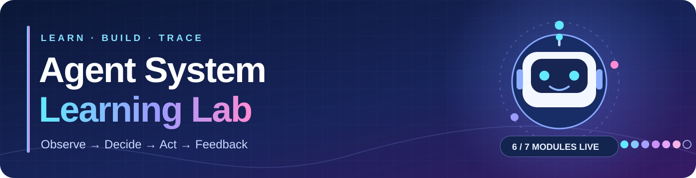

🧹 Agent fundamentals
Separate decisions from environment execution. Compare cleaning policies and action costs across six rooms.
Build an agent. Watch it decide. Trace what actually runs. Seven hands-on Python labs connect agent fundamentals to a daily planner, its Harness, and reliability evaluation.

Observe → Decide → Act → Feedback
Start with the agent–environment loop. Then connect tools, manage information, plan work, inspect a Harness, and evaluate its reliability.

The diagram is a learning map. Modules 03–05 are complementary capabilities, not a strict dependency chain.
Each lab has runnable code and a detailed Chinese guide. Follow the sequence or jump to the concept you want to inspect.
Separate decisions from environment execution. Compare cleaning policies and action costs across six rooms.
Inspect function-call requests, Python tool execution, feedback to the model, and instruction experiments.
Connect one virtual phone task through local functions, REST API, and MCP; trace each request path.
Assemble model context from session history, saved preferences, and retrieved project guides.
Discover a reusable Skill, plan a meeting, reflect on failures, and repair the resulting plan.
Run the Daily Focus Planner with Task, Run, Turn, and Step traces, guarded execution, retries, and checkpoints.
Audit real run artifacts, inject faulty decisions and tool failures, and generate a diagnosis report across eight scenarios.
Conceptual notes accompany the experiments. The first note covers both Agent fundamentals and LLM agents. Notion page access follows its own sharing settings.
Clone the repository and run the six-room cleaning experiment. The LLM labs have separate setup steps in their guides.
git clone https://github.com/braventechcn/Agent_System.git
cd Agent_System
python3 -m venv .venv
.venv/bin/python 00_agent_system_basics/cleaning_agent.py